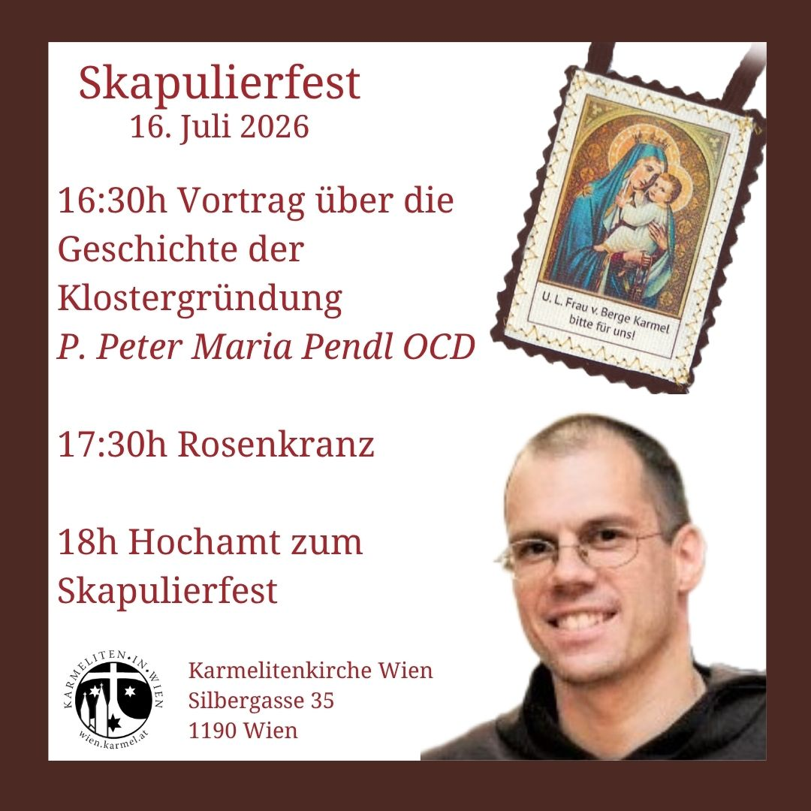
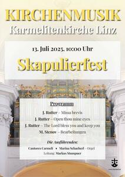

Skapulierfest
Hochfest Unserer Lieben Frau vom Berge Karmel
Der ganze Orden der Karmelitinnen und Karmeliten feiert das wichtigste Ordensfest am 16. Juli zu Ehren Unserer Lieben Frau vom Berge Karmel, auch “Skapulierfest” genannt. Während der Messe des Hochfests besteht die Möglichkeit, das Skapulier zu empfangen.
Karmel Wien
Das Skapulierfest in der Karmelitenkirche Wien

Skapulierfest im Karmel Wien: Donnerstag 16. Juli 2026
16:30h Vortrag: Über die Geschichte der Klostergründung mit P. Peter Maria Pendl OCD
17.30h Rosenkranz
18.00h Feierliches Hochamt
Während der hl. Messe kann das Skapulier empfangen werden
Freiwillige Spenden kommen dem Kloster zugute
Karmel Linz
Das Skapulierfest in Karmelitenkirche Linz

Am 16. Juli wird im Karmelitenorden das Hauptfest "Unsere Liebe Frau vom Berge Karmel" gefeiert. Wir begehen am Sonntag, den 13. Juli, die vorverlegte "äußere Feier" und laden sie herzlich zur Teilnahme ein. Der Gottesdienst wird musikalisch gestaltet von den Cantores Carmeli unter der Leitung von Markus Stumpner.
Programm:
John Rutter - Missa brevis
John Rutter - Open thou mine eyes, The Lord bless you and keep you
Michael Stenov - Bearbeitungen des Flos Carmeli, Magnificat, Gotteslobbearbeitungen
Solisten:
Marina Schacherl - Orgel